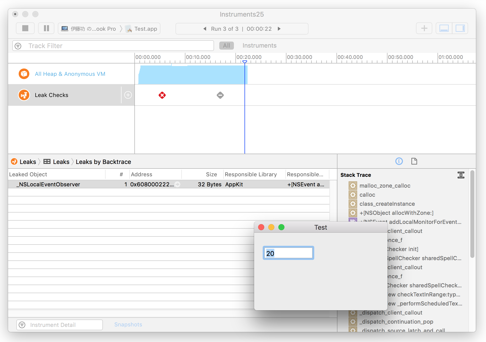
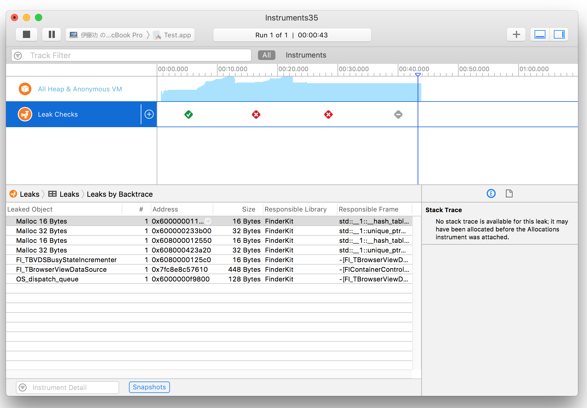

メモリーリークの実例
ARCの導入によりメモリーリークを起こすようなコーディングはほとんどなくなってきている。また、CGImageクラスは、Objective-Cでは未対応だったが Swiftでは対応済みになったように、ARCがカバーする領域は増えている。アプリケーションの作成過程で一応メモリリークのチェックを行っているが、そういう中でも発生したメモリーリークの稀有な実例を挙げていきたいと思う。
システム環境
OS 10.12.6
Swift 4.0
Xcode 9.2
テキストフィールドへの代入
テキストフィールドにプログラムから値を代入するという何の変哲もない処理で謎のメモリーリークが発生する。おそらくシステムのバグだと思う。

オープンパネル
App Sandboxを OFFにしてパネルのオープンを実行するとメモリーリークが発生する。実行のたび必ず起こるのではないが、２〜３回に１回は発生する。
App Sandboxを ON、File Accessの User Selected Fieを Read Onlyに設定すれば発生しない。
